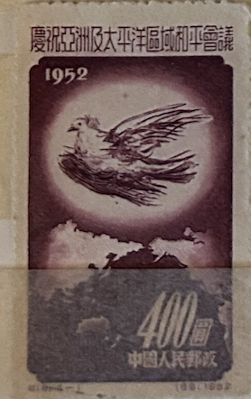
| SOURCE | TITLE| IMAGE MATCH | click to source page |
| eBay | Error, Variety Chinese Stamps for sale | eBay |  |
| Etsy | Set of 4 1952 China Stamps | - Etsy | 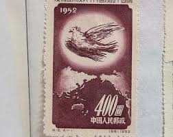 |
| eBay | CHINA LOT OF 2 STAMPS ( SOUV D4 ) BB 11 | eBay |  |
| eBay | PRC #167-168 Unused, No Gum | eBay | 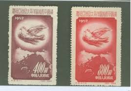 |
| YouTube | YouTube | 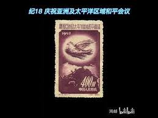 |
| Yahoo! JAPAN | 中国の王朝名である秦と新と清は、日本語では「シン」と呼びますが、英語の発音... - Yahoo!知恵袋 | 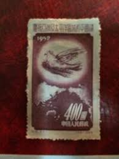 |
| Todocolección | china, republica popular nº 190 (año 1952) palo - Buy Antique stamps of China on todocoleccion | 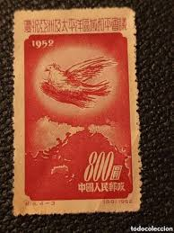 |
| brstamp.com | 纪18 庆祝亚洲及太平洋区域和平会议– 左氏珍藏 | 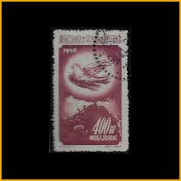 |
| OLX Ukraine | Марки филателия: 10 грн. - Коллекционирование Белая Церковь на Olx | 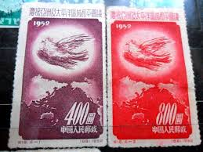 |
| photoismoney.com | 邮票记下真实的历史~ 匆匆岁月时光漫游 | 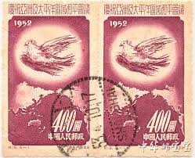 |
| Etsy | Set of 4 1952 China Stamps | - Etsy Canada | 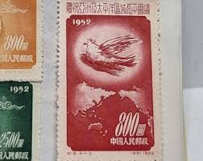 |
| eBay | AOP) China PRC #167-70 cto used. 1952 Peace Conference set of 4 | eBay |  |
| 每日頭條 | 中國鈔券雕刻父子雙傑吳錦棠和吳彭越——孫文雄發表文集四- 每日頭條 | 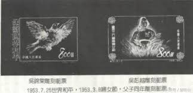 |
| eBay | Mint No Gum/MNG Birds Chinese Stamps for sale | eBay | 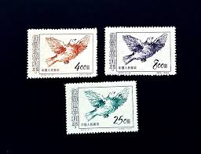 |
| TaiBIF | Special 102 Taiwan Handicraft Products Postage Stamps (Issue of 1974) (D102) | Digital Taiwan - Images | 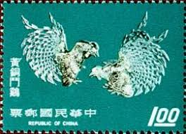 |
| Xabusiness.com | 1952 China Stamps |  |
| Find Your Stamps Value | World Peace: Picasso Dove - 保护世界和平：毕加索鸽子$800 Purple stamp price, value | 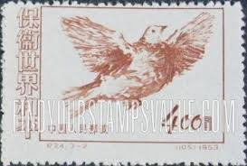 |
| eBay | China PRC 1952, C18, Sc. 167-170, Mi. 192-195, MINT, MNH, 6 complete set NGAI | eBay | 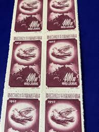 |
| HipStamp | China Stamp: 1953-Sc#187-9 World Peace Picasso Dove ; Mnh-Set of 3 Stamps | Asia - China, General Issue Stamp / HipStamp | 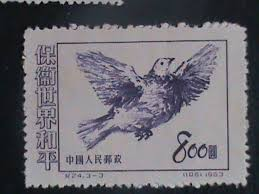 |
| HipStamp | China-1951-Sc#108-110 Picasso Painting-Peace Dove-Fancy Cancel VF Rare | Asia - China, General Issue Stamp / HipStamp |  |
| eBay | Ryukyu Islands 74 (1959) 3c Egret and Rising Sun block of four never hinged | eBay |  |
| eBay | Chinese Stamp Collections & Mixtures for sale | Shop with Afterpay | eBay Australia | 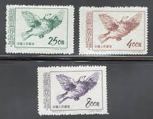 |
| eBay | Ryukyu Islands - 1960 - 3 Cents Reddish Brown Little Egret & Rising Sun #74 F-VF | eBay |  |
| Find Your Stamps Value | World Peace: Picasso Dove - 保护世界和平：毕加索鸽子$400 Orange brown stamp price, value |  |
| Xabusiness.com | 1953 China Stamps |  |
| eBay | PR CHINA Stamp - 1953 World Peace Dove 8$ Sn 189 MNG r5 | eBay |  |
| eBay | 3 Cent US Possessions Stamps for sale | eBay |  |
| eBay | PRC 1953 Sc 187/9 dove,set MNH,no gum as issued r2134 | eBay |  |
| eBay | CHINA PRC 1953 C24 WORLD PEACE, DOVES (Scott 187-89) VF MNH | eBay |  |
| Xabusiness.com | C24 Scott 187-189 Defend World Peace (3rd Set) - China Stamps | 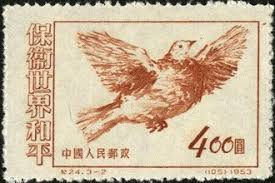 |
| eBay | China Sc 187-9, C24, Mint, No Gum As Issued, Fresh Color, Very Fine | eBay | 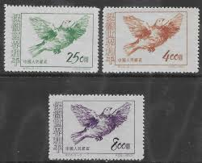 |
| eBay | R7/24 China Stamp 1951 Peace Complete Set Of 3 T24.3-1 -3 MNHNGAI Great Coll | eBay | 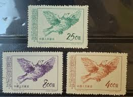 |
| lastdodo.com | Dove Of Peace (1953) - China - People's Republic - LastDodo |  |
| HipStamp | China Stamps: 1951 Sc#110-World Peace-Mint Stamps- 69 Years OLD Stamp Mint Stamp | Asia - China, General Issue Stamp / HipStamp |  |
| Find Your Stamps Value | Value of mm爱尔兰极品JK制服女上门mm微信: 43795072☆快手抖音小网红pix stamps | 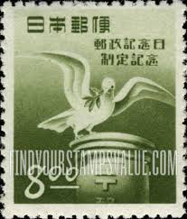 |
| Carousell | China Stamps C24 MNH NGAI, Hobbies & Toys, Memorabilia & Collectibles, Stamps & Prints on Carousell |  |
| chinesestamp.org | C010/JI10/纪10, Defend World Peace (2nd Set)《保卫世界和平（第二组）》 - Chinese Postage Stamps | China Postage Stamps | Chinese Stamp Album | China Philatel | ACPF | Stamps Catalogue of PRC | 中国邮票目录| | 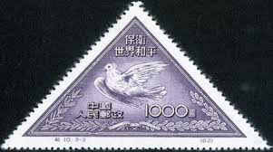 |
| eBay | 1953 China Sc# 187-89 - Picasso Dove Set - MH postage stamps Cv$7 | eBay | 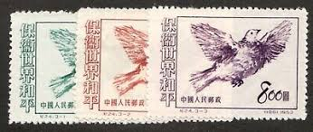 |
| eBay | China C18 Asia-Pacific Peace Conference Set of 4v - Mint NGAI (SL182) | eBay |  |
| GetArchive | 10 Animals On Stamps Of China Image: PICRYL - Public Domain Media Search Engine Public Domain Search} |  |
| eBay | RYUKYU 1960 LITTLE EGRET AND RISING SUN MNH Sc 74 | eBay | 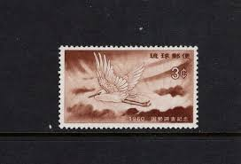 |
| eBay | China stamps Sc#187-189 "World Peace" three stamps Unused | eBay | 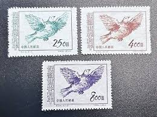 |
| eBay | CHINA PRC 1953 CLEARANCE SALE VERY FINE MINT STAMP #Ch1 | eBay | 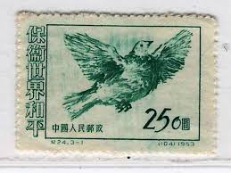 |
| eBay | US RYUKYU ISLANDS #74 / 1960 Egret & Rising Sun / MH / 2022 SCV $5 | eBay | 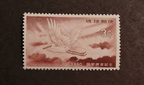 |
| eBay | CHINA PRC 1953 C24 Defend World Peace 3-3 Imprint Marginal MNH XF | eBay |  |
| Find Your Stamps Value | World Peace: Picasso Dove - 保护世界和平：毕加索鸽子$250 Blue green stamp price, value |  |
| Wikimedia.org | File:Patriotic aviation fund post card stamp.JPG - Wikimedia Commons |  |
| HipStamp | P.R.C. China #188 MNH Stamp - CAT VALUE $2.25 | Asia - China, General Issue Stamp / HipStamp |  |
| eBay | Postage Stamps Taipei Taiwan Republic of China Birds Unopened Letter Ivo Stuyck | eBay | 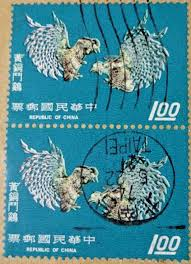 |
| Shutterstock | China Prc 1953 July 25 800 Stock Photo 2195282077 | Shutterstock |  |
| eBay | China, Peoples Rep. of, Scott 187-189 (1953) Mint LH F-VF, CV $7.00 Q | eBay |  |
| eBay | China 1953 - Mint stamps issued without gum. Mi nr.: 212-214..... (VG) MV-12689 | eBay |  |
| eBay | China 1953 World Peace MNH VF (NGai) | eBay |  |
| HipStamp | China Stamps: 1950 Sc#59- World Peace Campaign- Mint Stamps- 72 Years OLD Stamp | Asia - China, General Issue Stamp / HipStamp | 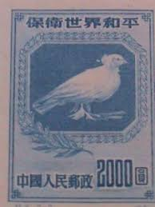 |
| Bodies and Structures 2.0 | Studying Art in Colonial Libraries | 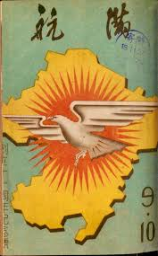 |
| eBay | Japan Beautiful FDC from 1957 MiNr. 674 | eBay | 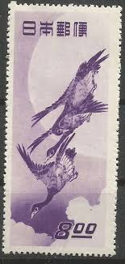 |
| eBay | People's Republic of China Scott #187 Mint No Gum As Issued | eBay |  |
| Shutterstock | China Circa 1953 Stamp Printed China Stock Photo 43194898 | Shutterstock | 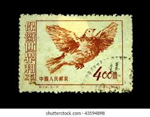 |
| eBay | Japan 1950, Mi#501, Sc#500, Day of Posts, bird, dove, olive twig, letter, MNH! | eBay | 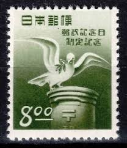 |